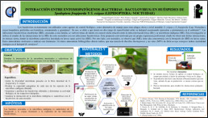
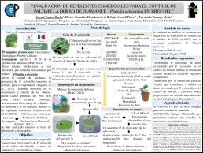

Presentación de carteles
de proyectos de investigación
• HORMIGAS ASOCIADAS A
Planococcus ficus
(HEMIPTERA: PSEUDOCOCCIDAE) EN VIÑEDOS DE ENSENADA, BAJA CALIFORNIA, MÉXICO
Brenda Castro-Alvarez

• INTERACCIÓN ENTRE ENTOMOPATÓGENOS (BACTERIAS-BACULOVIRUS) EN HUÉSPEDES DE
Spodoptera frugiperda
Y
S. exigua
(LEPIDOPTERA: NOCTUIDAE)
Cristian Estrada-Emigdio
• CAPACIDAD DE LOS MACHOS DEL PARASITOIDE
Tamarixia radiata
PARA FECUNDAR A LAS HEMBRAS
Carlos Alberto Gutiérrez-Sánchez
• EVALUACIÓN DE LA CAPACIDAD DE DOS HONGOS ENTOMOPATÓGENOS Y DOS ÁCAROS DEPREDADORES PARA REDUCIR LA POBLACIÓN DE
Tetranychus urticae
EN PLANTAS DE
Dendranthema grandiflorum
, EN CONDICIONES DE INVERNADERO
Vicente Hernández Valencia
• Semiquímicos asociados al comportamiento sexual de
Drosophila suzukii
Itzel Lima Rivera
• INTEGRACIÓN DE VARIEDADES RESISTENTES DE MAÍZ Y POLVOS VEGETALES CONTRA EL GORGOJO COMÚN DEL MAÍZ
Sitophilus zeamais
José de Jesús Macedo González
• SITIOS POTENCIALES PARA EL ESTABLECIMIENTO DE
Brevipalpus californicus
Y
B. yothersi
EN CÍTRICOS DE MÉXICO CON BASE EN SU TOLERANCIA A HELADAS
Diana Alejandra Mendoza Serrano
• Ácaro rojo (
Dolichotetranychus floridanus
Banks) de la piña: fluctuación poblacional, distribución espacial y control con hongos entomopatógenos
Gerardo Montiel Vicencio
• FACTORES QUE INFLUYEN EN LA CRÍA DE
Chelonus insularis
(HYMENOPTERA: BRACONIDAE)
Erika Padilla-Cortes
• Estrategia de manejo para escarabajos ambrosiales: Caso
Xyleborus affinis
en el estado de Michoacán
Ivan Fermín Quiroz-Ibáñez

• EVALUACIÓN DE REPELENTES COMERCIALES PARA EL CONTROL DE LA PALOMILLA DORSO DE DIAMANTE (
Plutella xylostella
) EN BRÓCOLI
Jovani Tepato Barba
• Cambios metabólicos y expresión diferencial de genes quimiosensoriales de machos GSS Vienna-8 y silvestres de
Ceratitis capitata
Wied. a la aromaterapia del programa MOSCAMED
Brenda Torres-Huerta
Colegio de Postgraduados. Posgrado Fitosanidad, Entomología y Acarología
Km 36.5 carretera México-Texcoco, 56264, Montecillo, Texcoco, Estado de México. Tel 5959520200 ext 1608
coorento@colpos.mx